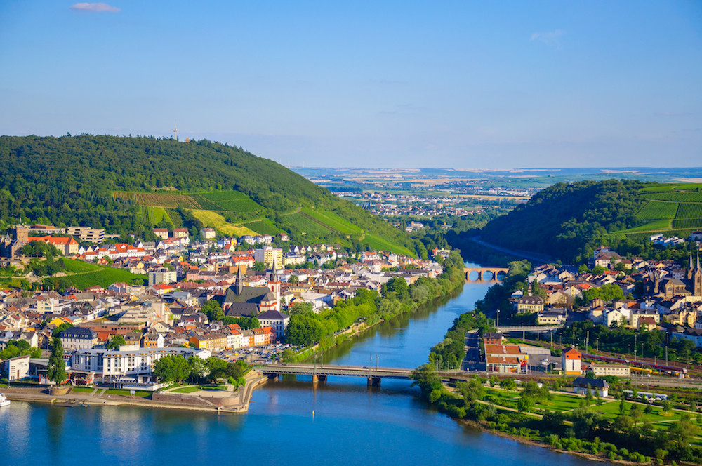

萊茵河11日遊

📍 地點：德國、瑞士、荷蘭
📅 天數：5天4夜
💰 價格：NT$ 61,900 起
行程內容
Day 1｜抵達法蘭克福
- 抵達法蘭克福機場，專車接送至酒店
- 晚上自由活動，可逛羅馬廣場
Day 2｜萊茵河遊船啟航
- 搭乘維京河輪，開始萊茵河之旅
- 沿途欣賞城堡與葡萄園美景
Day 3｜科布倫茲與小鎮探索
- 停靠科布倫茲小鎮，參觀德國古城區
- 品嚐當地啤酒與特色料理
Day 4｜萊茵河城堡巡禮
- 參觀萊茵河沿岸知名城堡如萊茵施泰因城堡
- 欣賞河岸葡萄園與自然風光
Day 5｜科隆與教堂參觀
- 抵達科隆，參觀科隆大教堂
- 逛科隆市區，體驗當地生活
Day 6｜阿姆斯特丹停靠
- 前往阿姆斯特丹，運河遊船欣賞城市風光
- 參觀梵谷博物館或安妮之家
Day 7｜荷蘭風車村與田園
- 前往風車村，拍攝典型荷蘭風車
- 參觀小漁村與運河景觀
Day 8｜瑞士萊茵瀑布
- 抵達瑞士萊茵瀑布，欣賞歐洲最大瀑布壯觀景色
- 自由拍照及河畔散步
Day 9｜自由活動
- 自行安排城市探索或購物行程
- 可選擇參加戶外登山或湖畔散步
Day 10｜歐洲河輪活動與晚宴
- 河輪上參加專屬晚宴與主題活動
- 享受河輪全中文服務及舒適設施
Day 11｜返回台灣
- 早餐後前往機場
- 搭乘班機返回台灣